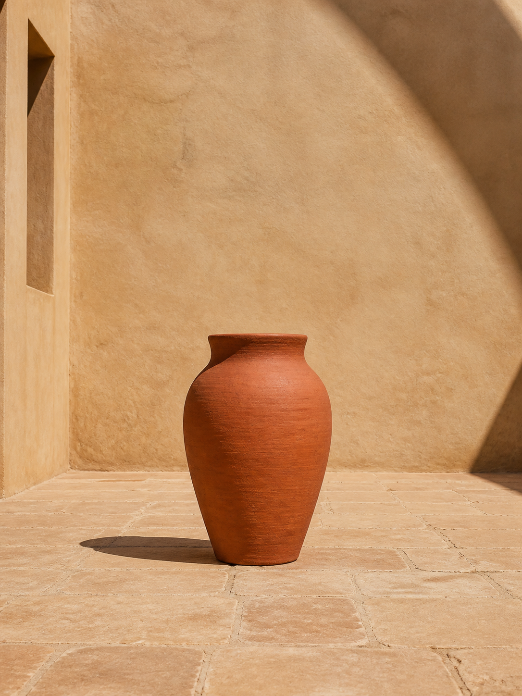
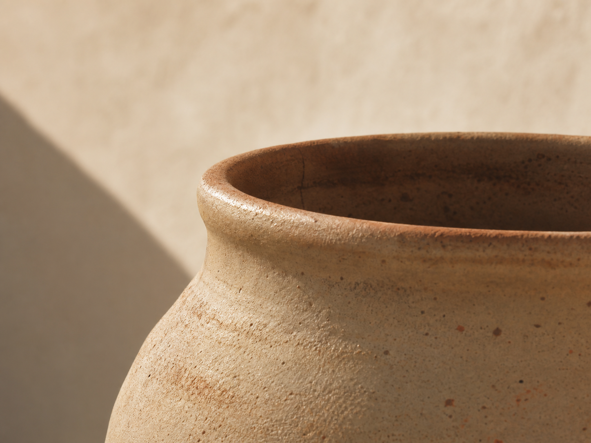
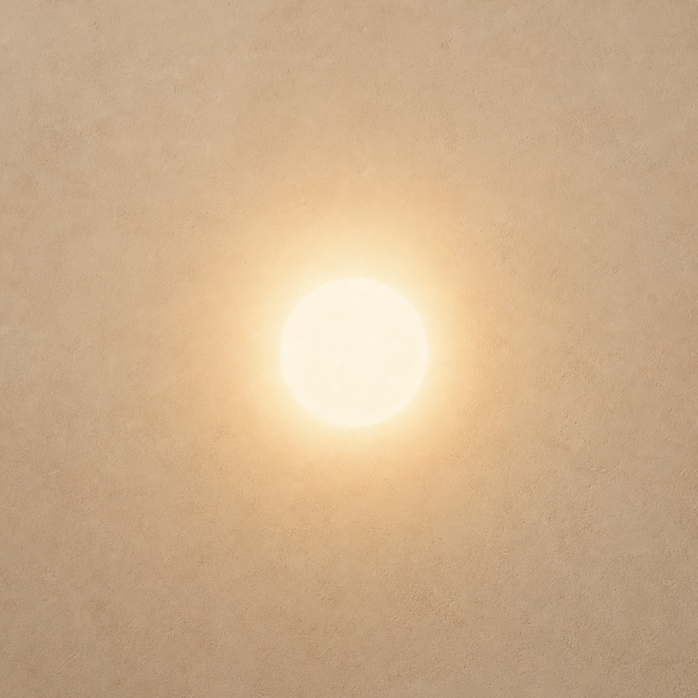

Cast a longer shadow.
One vessel. One sun. The shadow it throws is the only signature SOLANO makes.
SOLANO
SOLANO
The sun overhead.
The shadow gathers under the foot, brief and exact. The vessel becomes a sundial of itself, patient and unsigned, waiting for the day to write.

An object that earns its shadow.
Every piece is photographed in the same courtyard, on the same flagstone, at four o'clock. The shadow is not a styling decision. It is the only thing SOLANO promises in writing.
Sun-cured ceramic. Hand-thrown in a single batch of forty. Numbered on the underside in graphite. Never glaze, never ink.

Spec, in the shadow.
- Material
- Sun-cured red earthenware, single batch No. 04
- Edition
- 40 pieces, numbered in graphite
- Height
- 264 mm, plus or minus 2 mm
- Diameter
- 180 mm at the shoulder
- Mass
- 1.84 kg
- Finish
- Unglazed exterior, burnished interior
- Cured
- 96 hours, open courtyard, 38 °C peak
- Photographed
- Same flagstone, late afternoon
We do not sign our work. The sun does.
The next batch opens at noon on Saturday. Forty vessels, one courtyard.